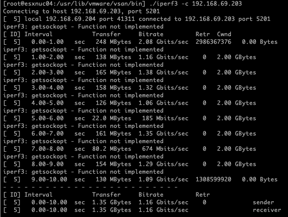

MAC Learning is your friend
Why you should use MAC Learning
homelabvcfnested labvmwareesxinetworkperformance
1744 Words // ReadTime 7 Minutes, 55 Seconds
2024-11-27 19:54 +0100
Intro
When working with nested ESXi environments, understanding the interplay between MAC Learning, Promiscuous Mode, and Forged Transmits is critical. These settings significantly affect how traffic flows in virtualized networks, especially in scenarios involving virtualized hypervisors or advanced network configurations.
-
MAC Learning: Think of it as a switch-like behavior in your virtual environment. It optimizes network traffic by ensuring that each virtual machine (VM) receives only the packets meant for its MAC address. Without MAC learning, when the ESXi VM’s vNIC connects to a switch port, it only contains a static MAC address. (more Information about MAC learning)
-
Promiscuous Mode: On the other hand, this allows a VM or virtual switch to capture all traffic on a port group, whether addressed to it or not. It’s a useful feature for troubleshooting and monitoring but comes with potential security and performance implications.
-
Forged Transmits: Forged Transmits plays a complementary role in this configuration. It ensures that traffic originating from a VM with a source MAC address different from its assigned MAC address is allowed to leave the virtual switch. This is crucial in nested environments.
Lab environment
In this lab environment, I am using two Minisforum MS-01 workstations, each equipped with ESXi 8.0.3 as the hypervisor. These compact systems provide a balance of performance and energy efficiency, fitting perfectly into my goal of maintaining a powerful yet quiet setup.
Each workstation is interconnected via dual 10 Gb/s network links, ensuring high-speed communication with minimal latency. This setup is particularly advantageous for simulating complex network scenarios and nested virtualization environments.
On each workstation, a nested ESXi host is deployed. These nested hosts act as virtualized hypervisors for a future VCF deployment.
The problems I’ve caused
In my previous lab setups, Promiscuous Mode was my go-to solution for nested virtualization. It was reliable, simple to configure, and worked flawlessly for years. While I was aware of the security risks associated with it, in a controlled homelab environment, those risks were not a significant concern.
However, everything changed when I upgraded my lab to dual 10 Gb/s network links and, powered by the i9 CPU, gained the ability to run multiple nested ESXi hosts on a single physical machine. One of the first challenges I encountered was during the configuration of a vSAN port group for my nested ESXi hosts. This port group was configured to use Active/Active load balancing across both 10 Gb/s uplinks on the MS-01 workstations. Almost immediately, I noticed unexpected performance issues. Nested VMs were experiencing slow network speeds, and vSAN operations were significantly hindered. Initially, I struggled to pinpoint the root cause. Given my past success with Promiscuous Mode, I didn’t suspect it could be contributing to the problem.
This article by my fellow vExpert colleague Nils Kristiansen inspired me to delve deeper into the topic.
Why Promiscuous Mode Became a Problem
The performance degradation stemmed from how traffic was handled with Promiscuous Mode in a dual-uplink, Active/Active configuration:
-
Broadcasting Traffic Across Both Uplinks: Promiscuous Mode caused the virtual switch to deliver all traffic to every uplink, regardless of the destination. With two high-speed uplinks in an Active/Active configuration, this created excessive overhead, saturating the uplinks and causing packet drops.
-
vSAN’s High Sensitivity to Latency: vSAN traffic is highly dependent on low latency and consistent performance. The unnecessary broadcast of packets interfered with its ability to operate efficiently.
-
Nested Virtualization Amplified the Problem: Nested ESXi hosts added another layer of complexity. The inner VMs were sending and receiving traffic that the parent ESXi host’s virtual switch struggled to handle efficiently under Promiscuous Mode.
OK, but how bad is the performance?
To quantify the performance issues, I turned to iPerf3, a reliable tool for measuring network throughput that is conveniently included in ESXi 8. Using iPerf3, I conducted a series of tests to better understand the extent of the performance degradation.
Performance Measurement 1: Both Physical NICs Active, Nested Hosts on the Same Physical Host
For the first test, I configured both pNICs (10 Gb/s) as active in an Active/Active load balancing setup and placed both nested ESXi hosts on the same physical host. Additionally, Promiscuous Mode was enabled on the port group to ensure traffic could flow properly between the nested hosts.

Results
[ ID] Interval Transfer Bitrate Retr
[ 5] 0.00-10.00 sec 1.35 GBytes 1.16 Gbits/sec 0 sender
[ 5] 0.00-10.00 sec 1.35 GBytes 1.16 Gbits/sec receiver
Performance Measurement 2: Single NIC Active, Nested Hosts on the Same Physical Host
For the second test, I modified the setup to use only one physical NIC (pNIC) while keeping both nested ESXi hosts on the same physical host. Promiscuous Mode was still enabled on the port group to ensure traffic routing between the nested hosts. By disabling the second uplink, the traffic path was simplified, reducing potential conflicts.

Results
[ ID] Interval Transfer Bitrate Retr
[ 5] 0.00-10.00 sec 11.4 GBytes 9.82 Gbits/sec 0 sender
[ 5] 0.00-10.01 sec 11.4 GBytes 9.80 Gbits/sec receiver
Performance Measurement 3: MAC Learning and Forged Transmits, Dual Uplinks, Nested Hosts on the Same Physical Host
For the third test, I switched to using MAC Learning and Forged Transmits, while keeping both physical NICs (pNICs) active in the Active/Active load balancing configuration. Both nested ESXi hosts were still located on the same physical host. This configuration was designed to optimize traffic handling without relying on Promiscuous Mode

Results
[ ID] Interval Transfer Bitrate Retr
[ 5] 0.00-10.00 sec 24.2 GBytes 20.8 Gbits/sec 0 sender
[ 5] 0.00-10.01 sec 24.2 GBytes 20.8 Gbits/sec receiver
Performance Measurement 4: MAC Learning and Forged Transmits, Single Uplink, Nested Hosts on the Same Physical Host
For the fourth test, I used a single uplink (pNIC) with both nested ESXi hosts on the same ESXi server. MAC Learning and Forged Transmits were enabled to optimize traffic handling. The throughput was 20.7 Gbits/sec, almost identical to Test 3. This confirms that, since the traffic did not need to traverse the physical network infrastructure, the single uplink configuration with MAC Learning and Forged Transmits performed just as efficiently, without the overhead of Promiscuous Mode.

Results
[ ID] Interval Transfer Bitrate Retr
[ 5] 0.00-10.00 sec 24.2 GBytes 20.8 Gbits/sec 0 sender
[ 5] 0.00-10.01 sec 24.2 GBytes 20.8 Gbits/sec receiver
Further Performance Measurements and Security Considerations
Additional performance tests revealed that the difference between Promiscuous Mode and MAC Learning was minimal or even non-existent when the nested hosts were placed on two different physical hosts. The traffic between the nested VMs did not significantly differ whether Promiscuous Mode or MAC Learning was enabled, indicating that both configurations performed similarly in a multi-host environment.
Side Effect of Promiscuous Mode: Duplicate Packets
Enabling Promiscuous Mode on a network interface can lead to duplicate packets when both the source and destination are on the same ESXi host. In this mode, the virtual machine receives all traffic, including its own outbound packets, causing unnecessary duplication. This can result in performance degradation due to increased CPU usage and network inefficiencies.
[root@esxnuc04:/usr/lib/vmware/vsan/bin] vmkping -I vmk1 192.168.69.203
PING 192.168.69.203 (192.168.69.203): 56 data bytes
64 bytes from 192.168.69.203: icmp_seq=0 ttl=64 time=0.356 ms
64 bytes from 192.168.69.203: icmp_seq=0 ttl=64 time=0.423 ms (DUP!)
64 bytes from 192.168.69.203: icmp_seq=0 ttl=64 time=0.426 ms (DUP!)
64 bytes from 192.168.69.203: icmp_seq=0 ttl=64 time=0.429 ms (DUP!)
64 bytes from 192.168.69.203: icmp_seq=1 ttl=64 time=0.249 ms
64 bytes from 192.168.69.203: icmp_seq=1 ttl=64 time=0.274 ms (DUP!)
64 bytes from 192.168.69.203: icmp_seq=1 ttl=64 time=0.277 ms (DUP!)
64 bytes from 192.168.69.203: icmp_seq=1 ttl=64 time=0.281 ms (DUP!)
64 bytes from 192.168.69.203: icmp_seq=2 ttl=64 time=0.261 ms
Sidequest: Using iPerf on ESXi 8.0.3
To use iPerf for network performance testing on ESXi 8.0.3, you’ll need to follow a few steps to enable and configure the necessary settings.
- Step 1: Disable the ESXi firewall temporarily First, disable the ESXi firewall to allow the iPerf tool to operate without restrictions:
esxcli network firewall set --enabled false
- Step 2: Allow executing iPerf Next, set the system to allow execution of non-installed binaries (such as iPerf), which are not part of the default ESXi installation:
localcli system settings advanced set -o /User/execInstalledOnly -i 0
- Step 3: Execute iPerf (Client example) Once you’ve set the necessary configuration, you can execute iPerf to test the network performance. Use the following command to run iPerf as a client (-c) and specify the target IP address (e.g., 192.168.69.203):
./usr/lib/vmware/vsan/bin/iperf3 -c 192.168.69.203
- Step 4: Re-enable the firewall Once you’ve finished testing, remember to re-enable the firewall for security reasons:
esxcli network firewall set --enabled true
- Step 5: Restrict execution of non-installed binaries To revert the system to its default behavior and restrict the execution of non-installed binaries, run the following command:
localcli system settings advanced set -o /User/execInstalledOnly -i 1
Why MAC Learning and Forged Transmits Replace Promiscuous Mode in Nested Environments
In a typical nested ESXi environment, each inner VM sends packets with its unique MAC address, which the virtual switch on the parent ESXi host does not recognize by default. This creates a challenge because:
- Without Promiscuous Mode, the switch drops packets destined for or originating from these MAC addresses.
- Without Forged Transmits, packets from inner VMs with “forged” source MAC addresses are also dropped.
By enabling MAC Learning and Forged Transmits:
MAC Learning ensures that the virtual switch learns the inner VMs’ MAC addresses dynamically, so it can correctly forward traffic to them without requiring Promiscuous Mode. Forged Transmits ensures that traffic from inner VMs with different source MAC addresses is allowed to leave the parent VM’s vNIC.
MAC Learning with Forged Transmits is a significant performance gamechanger, especially when running multiple nested VMs on a single physical ESXi host. However, it’s important to note that MAC Learning with Forged Transmits requires a Distributed Switch. If you’re using a Standard Switch, you’ll still need to rely on Promiscuous Mode to achieve similar functionality.